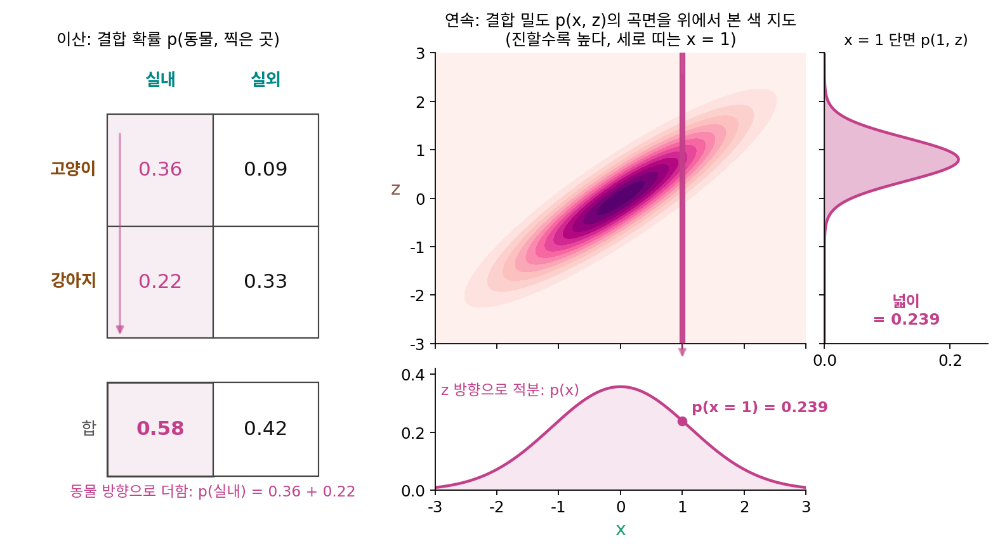
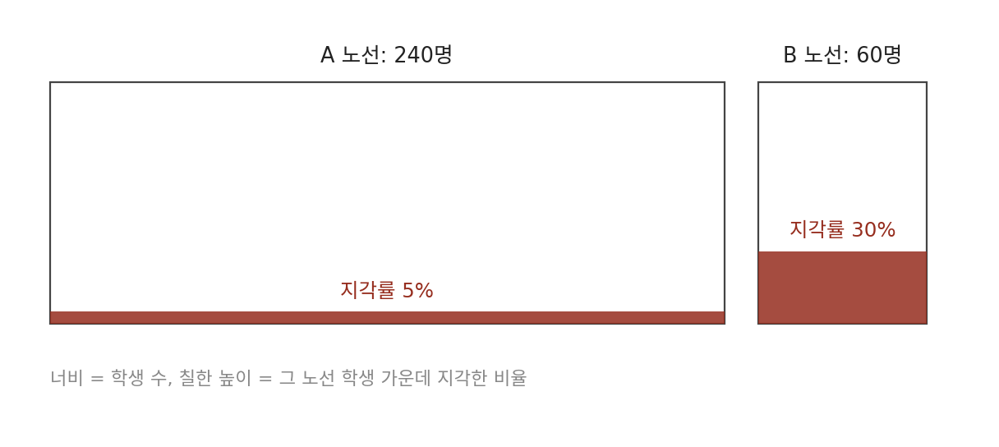
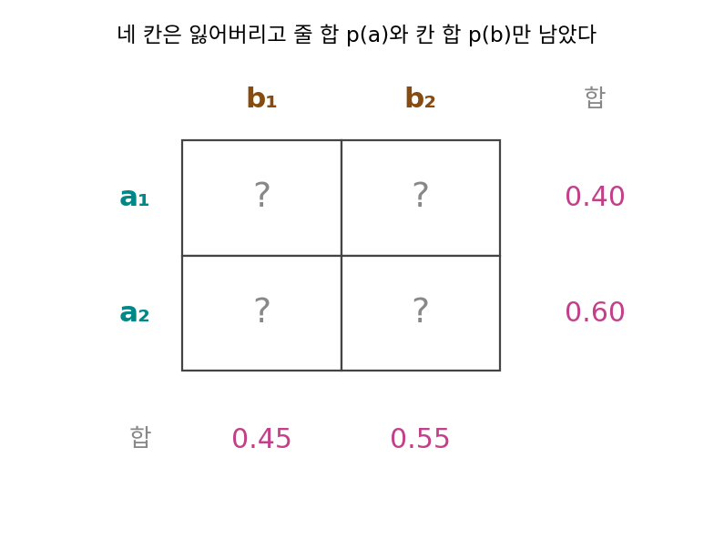
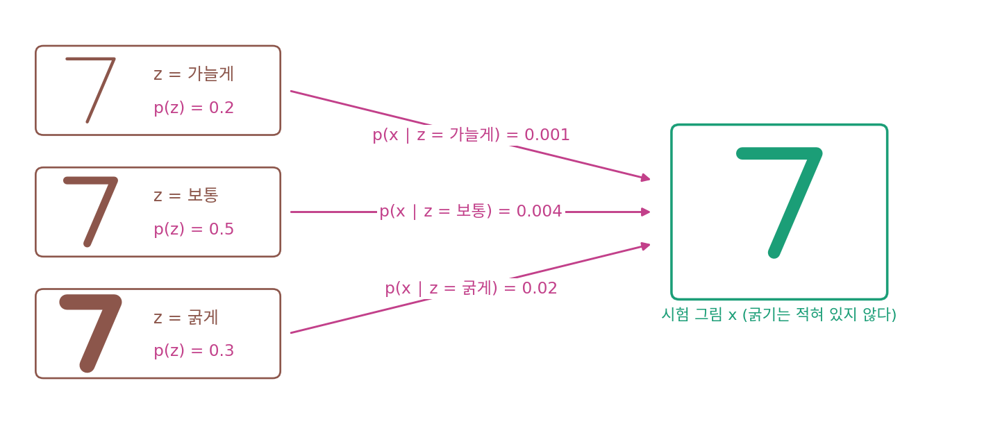

주변확률: 한쪽을 모두 더해 지우기
사진첩 표의 오른쪽 끝 칸과 맨 아래 줄에는 「합」이 적혀 있었다. 고양이 줄의 합 90과 실내 칸의 합 116은 조건부 확률의 분모로 썼지만, 두 합이 무엇을 센 값인지는 따로 묻지 않았다. 표가 손에 있으면 합은 더하기만 하면 나온다. 그런데 친구가 표는 보여 주지 않고 「고양이 사진은 80%가, 강아지 사진은 40%가 실내에서 찍혔어」라는 말만 전해 주었다면, 사진첩 전체에서 실내 사진은 몇 %일까? 80과 40의 가운데인 60%라고 답하고 싶어진다.
표의 가장자리에 적은 합
200장을 동물과 찍은 곳으로 나눠 센 표를 다시 적는다.
| 실내 | 실외 | 합 | |
|---|---|---|---|
| 고양이 | 72 | 18 | 90 |
| 강아지 | 44 | 66 | 110 |
| 합 | 116 | 84 | 200 |
실내 칸의 합 116은 실내에서 찍은 고양이 72장과 강아지 44장을 더한 수다. 실내 사진을 세면서 동물은 가리지 않았으니, 116 ÷ 200 = 0.58은 동물을 묻지 않고 잰 실내 사진의 비율이다. 같은 방법으로 고양이 줄의 합에서 90 ÷ 200 = 0.45, 강아지 줄의 합에서 110 ÷ 200 = 0.55가 나온다. 이렇게 결합 확률을 한 변수(여기서는 동물)의 모든 값에 걸쳐 더해 그 변수를 지우고 남은 확률을 주변확률 (다른 쪽을 모두 더해 지운 확률 / marginal probability)이라 하고, 남은 쪽의 모든 값에 걸쳐 모은 것을 주변 분포라 한다. 「주변」은 표의 가장자리(margin)를 가리킨다. 줄 합과 칸 합을 표의 가장자리에 적어 왔기 때문에 붙은 이름이다.
친구가 전해 준 두 숫자로 돌아가자. 실내 고양이 72장은 고양이 90장의 80%이니 72 = 0.80 × 90이고, 양쪽을 200으로 나누면 p(고양이, 실내) = p(실내 ∣ 고양이) × p(고양이) = 0.80 × 0.45 = 0.36이다. 강아지 쪽은 0.40 × 0.55 = 0.22다. 결합 확률은 조건부 확률에 조건의 주변확률을 곱한 값이고, 그 곱을 조건(동물)의 모든 값에 걸쳐 더하면 0.36 + 0.22 = 0.58, 표에서 센 실내 비율이 돌아온다.
식의 Σ(시그마)는 아래 적힌 변수의 모든 값에 걸쳐 더하라는 기호다. 60%가 빗나간 이유도 둘째 식에 보인다. 80과 40의 가운데를 고르는 계산은 고양이와 강아지에 무게를 반씩 주는데, 둘째 식에서 조건부 확률에 곱하는 무게는 조건의 주변확률 p(b)다. 이 사진첩에는 강아지가 110장으로 더 많아서 무게가 0.45 대 0.55이고, 실내 비율이 낮은 강아지(40%) 쪽으로 더 기운다. 그래서 0.58은 0.60보다 조금 낮다.
더하기에서 적분으로
동물은 값이 둘뿐이라 두 칸을 더하면 끝났다. 키나 몸무게, 사진의 밝기처럼 실수 값을 갖는 변수는 값이 끝없이 많아서 하나씩 더할 수 없다. 두 실수 x, z가 다음 순서로 정해진다고 하자. 먼저 z를 평균 0, 표준편차 1인 정규분포에서 뽑고, 그다음 x를 z 둘레에서 표준편차 0.5로 뽑는다. z 둘레에서 x를 뽑는 장난감을 고른 것은 결합 밀도를 p(x, z) = p(x ∣ z) p(z)로 바로 적을 수 있고, x 쪽만 남긴 분포의 정답(평균 0, 분산 1 + 0.5² = 1.25인 정규분포)도 알려져 있어서, 칸으로 나눠 더한 값을 정답과 견줄 수 있기 때문이다.
결합 밀도는 (x, z) 평면 위에 비스듬히 누운 언덕 모양의 곡면이다. x = 1에서 z를 지우려면, 표에서 실내 칸을 세로로 따라 내려가며 더했듯이 x = 1인 세로 줄을 따라 곡면의 높이를 모두 더해야 한다. z를 하나씩 더할 수는 없으니 −4부터 4까지를 같은 폭의 칸으로 나누고, 칸마다 「높이 × 칸 폭」을 더해 보자.
| 칸 폭 | 칸 수 | 높이 × 칸 폭의 합 |
|---|---|---|
| 2 | 5 | 0.098 |
| 1 | 9 | 0.242 |
| 0.5 | 17 | 0.2392 |
| 0.1 | 81 | 0.2392 |
칸 폭이 2일 때는 칸이 너무 넓어 단면의 봉우리 모양을 잡지 못하고 크게 모자라며, 폭을 줄일수록 정답 0.2392로 다가간다. 칸 폭을 0으로 줄여 가며 더한 값의 극한이 해석학에서 배우는 적분이다. 동물 방향으로 칸을 더해 동물을 지운 일과, z 방향으로 곡면을 적분해 z를 지운 일은 같은 연산이다. 지우려는 변수의 방향으로 결합 확률을 모두 쌓는데, 값이 띄엄띄엄이면 더하기, 연속이면 적분이 된다. 이렇게 한 변수를 더하거나 적분해서 지우는 연산을 주변화(marginalization)라 부른다.

두 그림은 같은 자리에 같은 것을 둔다. 표의 칸이 곡면의 한 점, 실내 칸의 세로 줄이 x = 1의 세로 띠, 아래 가장자리의 합 칸이 아래 가장자리의 곡선 p(x)에 대응한다. 식의 ∫(인테그럴)은 라이프니츠가 합(라틴어 summa)의 첫 글자 S를 길게 늘여 쓴 기호로, Σ처럼 더한다는 뜻에 더하는 칸이 끝없이 좁아졌다는 뜻을 얹었다. 곡면 아래 부피 전체가 1이므로, z로 먼저 적분하고 x로 다시 적분하면 곡선 p(x) 아래 넓이도 1이 된다. 해석학에서 이중적분을 한 변수씩 차례로 계산할 때 안쪽 적분을 끝낸 결과가 주변 분포다.
ML에서: 보이지 않는 변수를 적분으로 지우기
앞의 장난감은 z를 먼저 뽑고 그 둘레에서 x를 뽑았다. 그림을 만드는 생성 모델 가운데에도 같은 순서를 따르는 것이 많다. 정규분포에서 숫자 몇 개 z를 뽑아 신경망에 넣으면, 신경망이 그 숫자들로부터 그림 x를 그린다. z는 그림의 모양을 정하는 값이지만, 학습 데이터에 있는 것은 그림뿐이고 그림마다 z가 얼마였는지는 적혀 있지 않다. 데이터에 보이지 않는 이런 숨은 변수를 잠재 변수라 부른다.
모델이 실제 그림 x에 매기는 확률(연속이면 밀도) p(x)가 높을수록 모델은 데이터를 잘 흉내 낸다. 그래서 학습은 데이터의 그림마다 p(x)를 키우는 일로 적을 수 있다. 그런데 신경망이 바로 알려 주는 것은 z를 정해 두었을 때의 p(x ∣ z)뿐이다. 바라는 p(x)는 위의 적분처럼 z의 모든 값에 걸쳐 p(x ∣ z) p(z)를 더해야 얻는다. 장난감의 z는 숫자 하나라 칸 17개로 넉넉했다. 실제 모델의 z는 숫자가 여러 개라 적분이 숫자 개수만큼 여러 겹이 되고, 그림 한 장의 p(x)조차 칸을 나눠 직접 셀 수 없게 된다.
문제 4. 버스 두 노선의 지각
버스로 통학하는 학생 300명 가운데 240명은 A 노선, 60명은 B 노선을 탄다. 비가 많이 온 어느 월요일 아침, A 노선 학생의 5%와 B 노선 학생의 30%가 1교시에 지각했다. (가) 그날 버스 통학생 전체에서 지각한 학생의 비율은? (나) 학생회 게시판에 「A 노선 5%, B 노선 30%였으니 버스 통학생 지각률은 둘의 평균인 17.5%」라는 글이 올라왔다. 맞는가?


(가)는 사람 수로 세면 되겠다. A 노선 240명의 5%가 12명, B 노선 60명의 30%가 18명. 지각한 학생이 30명이니까 300명 가운데 10%야.

(나)의 17.5%는 10%보다 꽤 크네. 게시판 글은 5와 30을 더해서 2로 나눴어.

2로 나누면 두 노선에 무게를 얼마씩 준 거예요?

반씩이요. 실제 학생 수로는 240 대 60이라 무게가 0.8 대 0.2예요. 0.8 × 5% + 0.2 × 30% = 4% + 6% = 10%. 민준이가 사람 수로 센 값이랑 같아요.

그럼 게시판 글이 맞는 날도 있을까요?

두 노선 학생 수가 같으면 무게가 0.5씩이니까 0.5 × 5% + 0.5 × 30% = 17.5%. 학생 수가 반반일 때만 평균이 맞아요.

노선마다의 지각률은 조건부 확률 p(지각 ∣ 노선)이고 학생 수 비율이 p(노선)이야. 전체 지각률은 p(지각 ∣ 노선)을 p(노선)으로 무게 매겨 더한 주변확률이고. 지각률이 높은 B 노선에 학생이 적으니까 전체 지각률이 5% 가까이로 끌려 내려온 거야.
문제 5. 줄 합과 칸 합만 남은 표
두 값을 갖는 a(a₁, a₂)와 b(b₁, b₂)의 결합 확률이 p(a₁, b₁) = 0.30, p(a₁, b₂) = 0.10, p(a₂, b₁) = 0.15, p(a₂, b₂) = 0.45 이다(문제 2의 표). (가) 주변 분포 p(a)와 p(b)를 구하라. (나) 네 칸을 잃어버리고 p(a)와 p(b)만 남았다. 네 칸을 되살릴 수 있는가?

(가)는 줄과 칸을 더하면 돼. p(a) = (0.30 + 0.10, 0.15 + 0.45) = (0.40, 0.60), p(b) = (0.30 + 0.15, 0.10 + 0.45) = (0.45, 0.55).
(나)는요?

모르는 칸이 넷이고, 줄 합 둘과 칸 합 둘로 식도 넷이에요. 미지수 넷에 식이 넷이니까 풀릴 것 같아요.
숫자로 풀어 볼게. 왼쪽 위 칸을 t로 두면, 줄 a₁의 합에서 오른쪽 위는 0.40 − t, 칸 b₁의 합에서 왼쪽 아래는 0.45 − t, 줄 a₂의 합에서 오른쪽 아래는 0.60 − (0.45 − t) = 0.15 + t. 마지막 칸 b₂의 합은 (0.40 − t) + (0.15 + t) = 0.55인데… 어, t가 지워져 버리네.
넷째 식이 t를 정해 주지 못했네요. 칸 b₂의 합은 앞의 세 식과 다른 말을 하고 있었을까요?

잠깐, 줄 합 둘을 더해도 1이고 칸 합 둘을 더해도 1이에요. 둘 다 네 칸 전체의 합이니까요. 그럼 줄 합 둘과 칸 합 하나를 알면 남은 칸 합은 1에서 빼서 나와요. 식이 넷처럼 보였는데 서로 다른 말을 하는 식은 셋뿐이었어요.
그럼 t는 아무 값이나 되는 거야? t = 0.18을 넣으면 (0.18, 0.22, 0.27, 0.33)이고, 줄 합 0.40, 0.60과 칸 합 0.45, 0.55가 처음 표와 똑같이 나와.
아무 값은 아니야. 칸은 음수가 될 수 없으니까 0.40 − t ≥ 0, 0.45 − t ≥ 0, t ≥ 0. 그러면 t는 0부터 0.40까지야. 처음 표는 t = 0.30이었고.
민준 학생이 고른 0.18은 어디서 나온 값이에요?

음, 0.40 × 0.45 = 0.18이네요. a₁ 줄의 합에 b₁ 칸의 합을 곱한 값이에요.
다른 칸도 그런지 보자. 0.40 × 0.55 = 0.22, 0.60 × 0.45 = 0.27, 0.60 × 0.55 = 0.33. 네 칸이 다 칸마다 p(a) p(b)를 곱한 값이야.

가계부도 그렇겠다. 1월·2월 지출 합과 식비·교통비 합만 남아 있으면 1월 식비는 정할 수 없어. 달마다의 합이 줄 합, 항목마다의 합이 칸 합이고.

0.18짜리 표는 a와 b가 서로 상관없이 나올 때의 표예요. t가 0.30이면 a₁이 b₁과 그보다 자주 함께 나오고요. 한쪽을 더해 지우면 두 변수가 어떻게 함께 움직였는지도 같이 지워져요. 네 칸을 되살리려면 칸 하나, 또는 문제 2처럼 조건부 분포 p(a ∣ b)가 더 있어야 해요.
문제 6. 굵기를 모르는 손글씨 생성기
손글씨 숫자 생성기가 먼저 획 굵기 z를 가늘게·보통·굵게 가운데 하나로 확률 p(z) = (0.2, 0.5, 0.3)에 따라 뽑고, 그 굵기로 숫자 그림을 그린다. 시험 그림 한 장 x를 굵기마다 이 생성기가 그려 낼 확률은 p(x ∣ z) = (0.001, 0.004, 0.020)이고, 시험 그림에는 굵기가 적혀 있지 않다. (가) 생성기가 이 그림을 그려 낼 확률 p(x)는? (나) 굵기 하나 대신 숫자 20개짜리 z를 쓰고 숫자마다 칸을 10개로만 나눠 더한다면, 그림 한 장의 p(x)를 구하려고 더할 항은 몇 개인가?


굵기가 안 적혀 있으면 가장 흔한 「보통」으로 놓으면 되겠다. 절반이 보통이니까. 그럼 p(x) = 0.004.
이 그림이 보통 굵기로 그려졌다는 건 어떻게 알아요?

음, 모르죠. 굵게가 뽑혀서 그려진 그림일 수도 있고요.
세 굵기가 다 이 그림에 이르는 길이니까, 길마다 그 굵기가 뽑힐 확률을 곱해서 다 더해야 할 것 같아.
가늘게 0.2 × 0.001 = 0.0002, 보통 0.5 × 0.004 = 0.002, 굵게 0.3 × 0.020 = 0.006. 다 더하면 0.0082. 처음 답 0.004의 두 배쯤이네.
세 항 가운데 어느 항이 가장 커요?
굵게 항이요. 0.006이면 0.0082의 73%예요. 가장 흔한 굵기는 보통인데, 이 그림은 거의 굵게 쪽에서 왔네요. 흔한 z 하나만 보면 그림을 실제로 만든 z를 놓칠 수 있어요.
(나)는요?
숫자 하나에 칸 10개면, 숫자 둘이면 10 × 10 = 100칸이고 숫자 20개면 10²⁰칸이에요. 칸마다 생성기를 한 번 돌려 p(x ∣ z)를 재야 하니까 항도 10²⁰개요.

한 번 돌리는 데 1밀리초라고 쳐도 10¹⁷초, 30억 년이 넘어. 그림 한 장의 p(x)를 구하는 데만.
칸을 숫자마다 10개로 나눈 것도 거칠어. 위의 장난감에서는 숫자 하나짜리 z를 칸 폭 2로 나눴더니 0.098이 나와서 정답 0.2392를 크게 빗나갔잖아.
생성 모델이 키우고 싶은 p(x)는 z를 적분으로 지워야 나와요. z가 길어지면 그 적분을 칸으로 나눠 셀 수가 없어요.